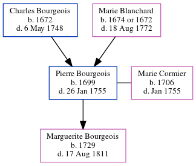

Pierre Bourgeois 1699 - 1755
[ Home ] | [ Calendar ] | [ Surnames Index ] | [ Census Index ] | [ Family History ]The child of Charles Bourgeois and Marie Blanchard, Pierre Bourgeois, the 7 times great-grandfather of Michele Copp (née Phillips), was born in Beaubassin, , New Brunswick, Canada in 16991,2,3 and married Marie Cormier (with whom he had 1 child, Marguerite) in Amherst, , Nova Scotia, Canada on Aug 18, 1722He arrived in South Carolina on 1755;1756. He arrived in South Carolina in 1755.
He died on Jan 26, 1755 in Beaubassin, Nova Scotia.
Parents
- Charles was born in 1672
- Marie was born on Jan 1, 1674
Children
- Marguerite was born in 1729
Citations
- Family Data Collection - Births Online publication - Provo, UT, USA: The Generations Network, Inc., 2001.
- Family Data Collection - Individual Records Online publication - Provo, UT, USA: The Generations Network, Inc., 2000.
- U.S. and International Marriage Records, 1560-1900 Online publication - Provo, UT, USA: The Generations Network, Inc., 2004.Original data - This unique collection of records was extracted from a variety of sources including family group sheets and electronic databases. Originally, the information was deriv
Family Tree
Generated by ged2site. Last updated on Jun 6, 2024